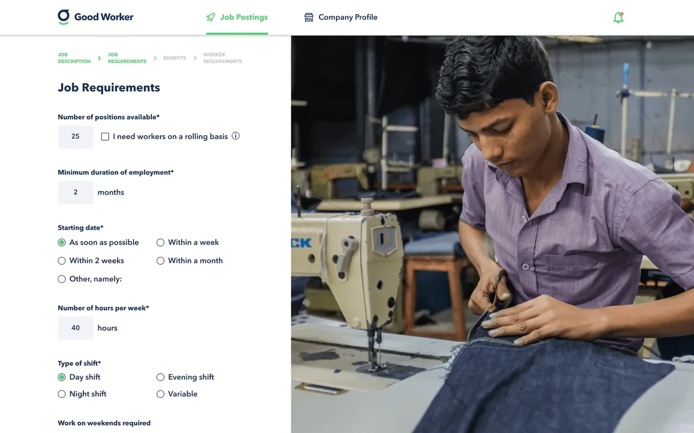

There are four hundred and fifty million blue-collar workers in India. Most are hired through middlemen and have no formal record of their skills or employment history. GoodWorker wanted to fix that and needed three products to do it.
Outcome
The employer portal shipped as the MVP for Temasek’s GoodWorker platform. Usability testing with 10 employers caught issues that we fixed before launch. GoodWorker reached 1 million users in its first year but couldn’t find enough employers to place them. It was sold in 2025.
1MUsers in the first year
10Employers in usability testing
My part
I joined halfway through the project to lead the product team: one junior designer, one researcher, one PM. I took the employer portal from wireframes through a tested high-fidelity prototype. I also made the call on what went into the MVP.
Decisions
Keydecisions.
1/2
Scope the MVP to three flows
Of the three products, the employer portal had the clearest success metric: does an employer hire someone? I scoped the MVP to three flows (create a job posting, review candidates, contact one). I deferred everything else, so we could stay focused and learn faster.

2/2
Test wireframes before going high-fidelity
We ran 10 employer usability sessions on wireframes before touching any high-fidelity design. Those sessions caught a critical issue: employers wanted to see a candidate’s location before their skills. So we flipped the order. Finding that kind of thing before hi-fi saves a lot of rework.